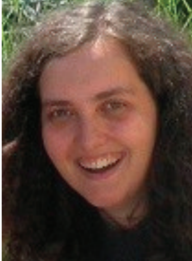

|
Pfarrer Dr. Sabinus Iweadighi Geb.: 25. Dezember 1966 seit 2005 Pfarrer in Pottenbrunn Seit September 2016 Pfarrer in Wagram und Pottenbrunn |
Pastoralassistent Nikola Galic Geb.: 1. Juli 1989 Pastoralassistent seit September 2016 |
||

|
Pfarrer i.R. Karl Permoser Geb.: 10. Juni 1939 Hobbies: Sport und Musik |
 |
Pastoralassistentin Bettina Steinbauer Geb.: 1.Jänner 1988 Pastoralassistentin seit September 2013 |
|
Kaplan Eugene Ucheoma Geb.: 20. Januar 1976 Seit September 2016 Kaplan in Wagram & Pottenbrunn |

|
Pfarrsekretärin Sabine Schweigl |